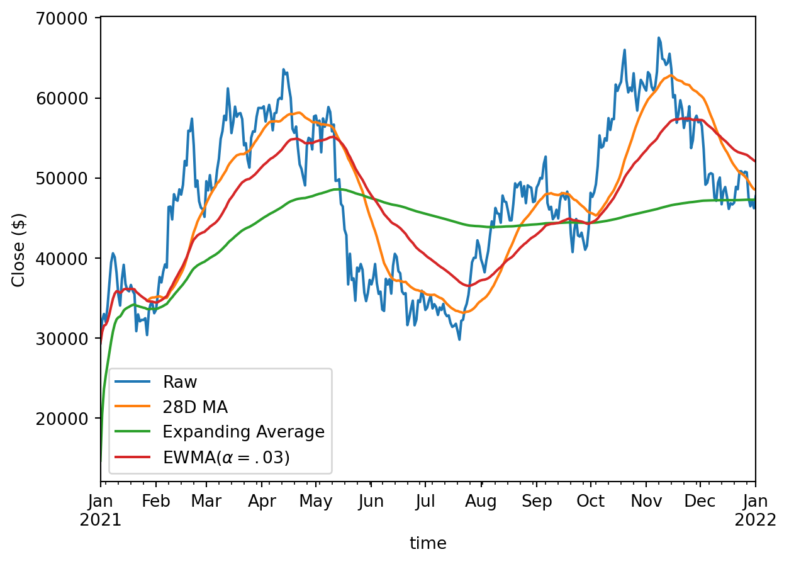

from pathlib import Path
from io import StringIO
from datetime import datetime, date
import requests
import polars as pl
import pandas as pd
import matplotlib.pyplot as plt
pl.Config.set_tbl_rows(5)
pd.options.display.max_rows = 5
data_path = Path("../data/ohlcv.pq")
def epoch_ms(dt: datetime) -> int:
return int(dt.timestamp()) * 1000
if data_path.exists():
ohlcv_pl = pl.read_parquet(data_path)
else:
start = epoch_ms(datetime(2021, 1, 1))
end = epoch_ms(datetime(2022, 1, 1))
url = (
"https://api.binance.com/api/v3/klines?symbol=BTCUSDT&"
f"interval=1d&startTime={start}&endTime={end}"
)
resp = requests.get(url)
time_col = "time"
ohlcv_cols = [
"open",
"high",
"low",
"close",
"volume",
]
cols_to_use = [time_col, *ohlcv_cols]
cols = cols_to_use + [f"ignore_{i}" for i in range(6)]
ohlcv_pl = pl.from_records(resp.json(), orient="row", columns=cols).select(
[
pl.col(time_col).cast(pl.Datetime).dt.with_time_unit("ms").cast(pl.Date),
pl.col(ohlcv_cols).cast(pl.Float64),
]
)
ohlcv_pl.write_parquet(data_path)
ohlcv_pd = ohlcv_pl.with_columns(pl.col("time").cast(pl.Datetime)).to_pandas().set_index("time")5 Timeseries
Temporal data is an area in which Pandas actually far outshines R’s dataframe libraries. Things like resampling and rolling calculations are baked into the dataframe library and work quite well. Fortunately this is also true of Polars!
5.1 Get the data
We’ll download a year’s worth of daily price and volume data for Bitcoin:
5.2 Filtering
Pandas has special methods for filtering data with a DatetimeIndex. Since Polars doesn’t have an index, we just use .filter. I will admit the Pandas code is more convenient for things like filtering for a specific month:
ohlcv_pl.filter(
pl.col("time").is_between(
date(2021, 2, 1),
date(2021, 3, 1),
closed="left"
)
)
shape: (28, 6)
| time | open | high | low | close | volume |
|---|---|---|---|---|---|
| date | f64 | f64 | f64 | f64 | f64 |
| 2021-02-01 | 33092.97 | 34717.27 | 32296.16 | 33526.37 | 82718.276882 |
| 2021-02-02 | 33517.09 | 35984.33 | 33418.0 | 35466.24 | 78056.65988 |
| ... | ... | ... | ... | ... | ... |
| 2021-02-27 | 46276.88 | 48394.0 | 45000.0 | 46106.43 | 66060.834292 |
| 2021-02-28 | 46103.67 | 46638.46 | 43000.0 | 45135.66 | 83055.369042 |
ohlcv_pd.loc["2021-02"]| open | high | low | close | volume | |
|---|---|---|---|---|---|
| time | |||||
| 2021-02-01 | 33092.97 | 34717.27 | 32296.16 | 33526.37 | 82718.276882 |
| 2021-02-02 | 33517.09 | 35984.33 | 33418.00 | 35466.24 | 78056.659880 |
| ... | ... | ... | ... | ... | ... |
| 2021-02-27 | 46276.88 | 48394.00 | 45000.00 | 46106.43 | 66060.834292 |
| 2021-02-28 | 46103.67 | 46638.46 | 43000.00 | 45135.66 | 83055.369042 |
28 rows × 5 columns
5.3 Resampling
Resampling is like a special case of groupby for a time column. You can of course use regular .groupby with a time column, but it won’t be as powerful because it doesn’t understand time like resampling methods do.
There are two kinds of resampling: downsampling and upsampling.
5.3.1 Downsampling
Downsampling moves from a higher time frequency to a lower time frequency. This requires some aggregation or subsetting, since we’re reducing the number of rows in our data.
In Polars we use the .groupby_dynamic method for downsampling (we also use groupby_dynamic when we want to combine resampling with regular groupby logic).
(
ohlcv_pl
.groupby_dynamic("time", every="5d")
.agg(pl.col(pl.Float64).mean())
)
shape: (74, 6)
| time | open | high | low | close | volume |
|---|---|---|---|---|---|
| date | f64 | f64 | f64 | f64 | f64 |
| 2021-01-01 | 31084.316 | 33127.622 | 29512.818 | 32089.662 | 112416.84957 |
| 2021-01-06 | 38165.31 | 40396.842 | 35983.822 | 39004.538 | 118750.076685 |
| ... | ... | ... | ... | ... | ... |
| 2021-12-27 | 48521.24 | 49475.878 | 47087.4 | 47609.528 | 35886.94371 |
| 2022-01-01 | 46216.93 | 47954.63 | 46208.37 | 47722.65 | 19604.46325 |
ohlcv_pd.resample("5d").mean()| open | high | low | close | volume | |
|---|---|---|---|---|---|
| time | |||||
| 2021-01-01 | 31084.316 | 33127.622 | 29512.818 | 32089.662 | 112416.849570 |
| 2021-01-06 | 38165.310 | 40396.842 | 35983.822 | 39004.538 | 118750.076685 |
| ... | ... | ... | ... | ... | ... |
| 2021-12-27 | 48521.240 | 49475.878 | 47087.400 | 47609.528 | 35886.943710 |
| 2022-01-01 | 46216.930 | 47954.630 | 46208.370 | 47722.650 | 19604.463250 |
74 rows × 5 columns
Resampling and performing multiple aggregations to each column:
ohlcv_pl.groupby_dynamic("time", every="1w").agg(
[
pl.col(pl.Float64).mean().suffix("_mean"),
pl.col(pl.Float64).sum().suffix("_sum")
]
)
shape: (53, 11)
| time | open_mean | high_mean | low_mean | close_mean | volume_mean | open_sum | high_sum | low_sum | close_sum | volume_sum |
|---|---|---|---|---|---|---|---|---|---|---|
| date | f64 | f64 | f64 | f64 | f64 | f64 | f64 | f64 | f64 | f64 |
| 2021-01-01 | 32305.781429 | 34706.045714 | 31021.727143 | 33807.135714 | 117435.5928 | 226140.47 | 242942.32 | 217152.09 | 236649.95 | 822049.149598 |
| 2021-01-08 | 37869.797143 | 39646.105714 | 34623.334286 | 37827.52 | 135188.296617 | 265088.58 | 277522.74 | 242363.34 | 264792.64 | 946318.076319 |
| ... | ... | ... | ... | ... | ... | ... | ... | ... | ... | ... |
| 2021-12-24 | 49649.114286 | 50439.622857 | 48528.25 | 49117.98 | 31126.709793 | 347543.8 | 353077.36 | 339697.75 | 343825.86 | 217886.96855 |
| 2021-12-31 | 46668.905 | 48251.445 | 45943.185 | 46969.79 | 27271.230605 | 93337.81 | 96502.89 | 91886.37 | 93939.58 | 54542.46121 |
ohlcv_pd.resample("W").agg(['mean', 'sum'])| open | high | low | close | volume | ||||||
|---|---|---|---|---|---|---|---|---|---|---|
| mean | sum | mean | sum | mean | sum | mean | sum | mean | sum | |
| time | ||||||||||
| 2021-01-03 | 30143.926667 | 90431.78 | 32559.370000 | 97678.11 | 29844.696667 | 89534.09 | 31503.356667 | 94510.07 | 101711.455041 | 305134.365123 |
| 2021-01-10 | 36545.192857 | 255816.35 | 38563.458571 | 269944.21 | 33992.730000 | 237949.11 | 37280.132857 | 260960.93 | 121528.609450 | 850700.266152 |
| ... | ... | ... | ... | ... | ... | ... | ... | ... | ... | ... |
| 2021-12-26 | 49018.521429 | 343129.65 | 50294.841429 | 352063.89 | 48352.841429 | 338469.89 | 49603.737143 | 347226.16 | 29878.489421 | 209149.425950 |
| 2022-01-02 | 48137.188333 | 288823.13 | 49222.336667 | 295334.02 | 46940.895000 | 281645.37 | 47628.381667 | 285770.29 | 33173.196967 | 199039.181800 |
53 rows × 10 columns
5.3.2 Upsampling
Upsampling moves in the opposite direction, from low-frequency data to high frequency data. Since we can’t create new data by magic, upsampling defaults to filling the new rows with nulls (which we could then interpolate, perhaps). In Polars we have a special upsample method for this, while Pandas reuses its resample method.
ohlcv_pl.upsample("time", every="6h")
shape: (1461, 6)
| time | open | high | low | close | volume |
|---|---|---|---|---|---|
| date | f64 | f64 | f64 | f64 | f64 |
| 2021-01-01 | 28923.63 | 29600.0 | 28624.57 | 29331.69 | 54182.925011 |
| 2021-01-01 | null | null | null | null | null |
| ... | ... | ... | ... | ... | ... |
| 2021-12-31 | null | null | null | null | null |
| 2022-01-01 | 46216.93 | 47954.63 | 46208.37 | 47722.65 | 19604.46325 |
ohlcv_pd.resample("6H").mean()| open | high | low | close | volume | |
|---|---|---|---|---|---|
| time | |||||
| 2021-01-01 00:00:00 | 28923.63 | 29600.00 | 28624.57 | 29331.69 | 54182.925011 |
| 2021-01-01 06:00:00 | NaN | NaN | NaN | NaN | NaN |
| ... | ... | ... | ... | ... | ... |
| 2021-12-31 18:00:00 | NaN | NaN | NaN | NaN | NaN |
| 2022-01-01 00:00:00 | 46216.93 | 47954.63 | 46208.37 | 47722.65 | 19604.463250 |
1461 rows × 5 columns
5.4 Rolling / Expanding / EW
Polars supports all three of these but they’re not quite as powerful as in Pandas, since they don’t have as many different methods. The expanding support is more limited again, though there are workarounds for this (see below):
close = pl.col("close")
ohlcv_pl.select(
[
pl.col("time"),
close.alias("Raw"),
close.rolling_mean(28).alias("28D MA"),
close.alias("Expanding Average").cumsum() / (close.cumcount() + 1),
close.ewm_mean(alpha=0.03).alias("EWMA($\\alpha=.03$)"),
]
).to_pandas().set_index("time").plot()
plt.ylabel("Close ($)")Text(0, 0.5, 'Close ($)')
ohlcv_pd["close"].plot(label="Raw")
ohlcv_pd["close"].rolling(28).mean().plot(label="28D MA")
ohlcv_pd["close"].expanding().mean().plot(label="Expanding Average")
ohlcv_pd["close"].ewm(alpha=0.03).mean().plot(label="EWMA($\\alpha=.03$)")
plt.legend(bbox_to_anchor=(0.63, 0.27))
plt.ylabel("Close ($)")Text(0, 0.5, 'Close ($)')Polars doesn’t have an expanding_mean yet so we make do by combining cumsum and cumcount.
5.4.1 Combining rolling aggregations
mean_std_pl = ohlcv_pl.select(
[
"time",
pl.col("close").rolling_mean(30, center=True).alias("mean"),
pl.col("close").rolling_std(30, center=True).alias("std"),
]
)
ax = mean_std_pl.to_pandas().set_index("time")["mean"].plot()
ax.fill_between(
mean_std_pl["time"].to_numpy(),
mean_std_pl["mean"] - mean_std_pl["std"],
mean_std_pl["mean"] + mean_std_pl["std"],
alpha=0.25,
)
plt.tight_layout()
plt.ylabel("Close ($)")Text(26.83333333333334, 0.5, 'Close ($)')roll_pd = ohlcv_pd["close"].rolling(30, center=True)
mean_std_pd = roll_pd.agg(["mean", "std"])
ax = mean_std_pd["mean"].plot()
ax.fill_between(
mean_std_pd.index,
mean_std_pd["mean"] - mean_std_pd["std"],
mean_std_pd["mean"] + mean_std_pd["std"],
alpha=0.25,
)
plt.tight_layout()
plt.ylabel("Close ($)")Text(26.83333333333334, 0.5, 'Close ($)')
5.5 Grab Bag
5.5.1 Offsets
Pandas has two similar objects for datetime arithmetic: DateOffset which respects calendar arithmetic, and Timedelta which respects absolute time arithmetic. DateOffset understands things like daylight savings time, and can work with holidays too.
Polars just has a Duration type which is like Pandas Timedelta.
ohlcv_pl.select(pl.col("time") + pl.duration(days=80))
shape: (366, 1)
| time |
|---|
| date |
| 2021-03-22 |
| 2021-03-23 |
| ... |
| 2022-03-21 |
| 2022-03-22 |
ohlcv_pd.index + pd.Timedelta(80, "D")DatetimeIndex(['2021-03-22', '2021-03-23', '2021-03-24', '2021-03-25',
'2021-03-26', '2021-03-27', '2021-03-28', '2021-03-29',
'2021-03-30', '2021-03-31',
...
'2022-03-13', '2022-03-14', '2022-03-15', '2022-03-16',
'2022-03-17', '2022-03-18', '2022-03-19', '2022-03-20',
'2022-03-21', '2022-03-22'],
dtype='datetime64[ns]', name='time', length=366, freq=None)ohlcv_pd.index + pd.DateOffset(months=3, days=-10)DatetimeIndex(['2021-03-22', '2021-03-23', '2021-03-24', '2021-03-25',
'2021-03-26', '2021-03-27', '2021-03-28', '2021-03-29',
'2021-03-30', '2021-03-31',
...
'2022-03-13', '2022-03-14', '2022-03-15', '2022-03-16',
'2022-03-17', '2022-03-18', '2022-03-19', '2022-03-20',
'2022-03-21', '2022-03-22'],
dtype='datetime64[ns]', name='time', length=366, freq=None)5.5.2 Holiday calendars
Not many people know this, but Pandas can do some quite powerful stuff with Holiday Calendars. There is an open issue to add this functionality to Polars.
5.5.3 Timezones
Suppose we know that our timestamps are UTC, and we want to see what time it was in US/Eastern:
(
ohlcv_pl
.with_columns(
pl.col("time")
.cast(pl.Datetime)
.dt.replace_time_zone("UTC")
.dt.convert_time_zone("US/Eastern")
)
)
shape: (366, 6)
| time | open | high | low | close | volume |
|---|---|---|---|---|---|
| datetime[μs, US/Eastern] | f64 | f64 | f64 | f64 | f64 |
| 2020-12-31 19:00:00 EST | 28923.63 | 29600.0 | 28624.57 | 29331.69 | 54182.925011 |
| 2021-01-01 19:00:00 EST | 29331.7 | 33300.0 | 28946.53 | 32178.33 | 129993.873362 |
| ... | ... | ... | ... | ... | ... |
| 2021-12-30 19:00:00 EST | 47120.88 | 48548.26 | 45678.0 | 46216.93 | 34937.99796 |
| 2021-12-31 19:00:00 EST | 46216.93 | 47954.63 | 46208.37 | 47722.65 | 19604.46325 |
(
ohlcv_pd
.tz_localize('UTC')
.tz_convert('US/Eastern')
)| open | high | low | close | volume | |
|---|---|---|---|---|---|
| time | |||||
| 2020-12-31 19:00:00-05:00 | 28923.63 | 29600.00 | 28624.57 | 29331.69 | 54182.925011 |
| 2021-01-01 19:00:00-05:00 | 29331.70 | 33300.00 | 28946.53 | 32178.33 | 129993.873362 |
| ... | ... | ... | ... | ... | ... |
| 2021-12-30 19:00:00-05:00 | 47120.88 | 48548.26 | 45678.00 | 46216.93 | 34937.997960 |
| 2021-12-31 19:00:00-05:00 | 46216.93 | 47954.63 | 46208.37 | 47722.65 | 19604.463250 |
366 rows × 5 columns
5.6 Conclusion
Polars has really good time series support, though expanding aggregations and holiday calendars are niches in which it is lacking. Pandas DateTimeIndexes are quite cool too, even if they do bring some pain.